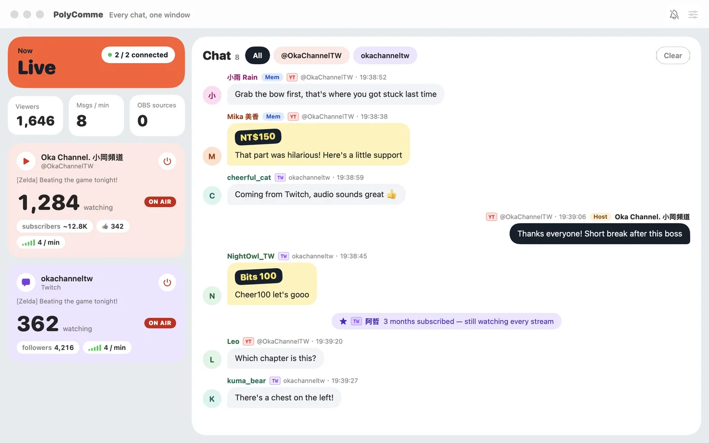
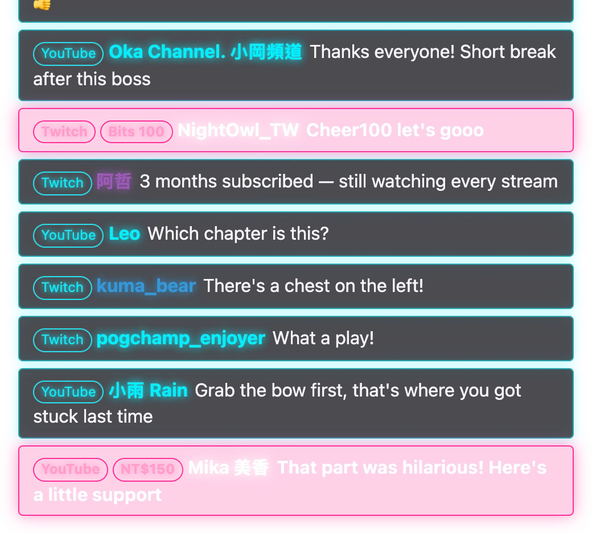

Now
Every chat,
one window.
Streaming on YouTube and Twitch at the same time? PolyComme merges both chats into one feed: you read everything in one window on your Mac, and your viewers see the same feed on stream through OBS. No API key, no sign-in — just open it.
Blocked by macOS the first time? See how to open it
Windows version in the works
YouTube
Chat · Super Chat
Super Stickers, new members
Twitch
Chat · Bits
Subs, resubs, gift subs

Features
Everything you watch while live, on one screen
-
Two platforms, one chat
YouTube and Twitch comments in time order, each tagged with its platform and channel — so two viewers with the same name never get mixed up. Want just one channel? Pick it at the top.
-
Paid messages stand out
Super Chats, Super Stickers and Bits are highlighted; new members, subs and resubs show up in the feed too.
-
Who is watching, how busy chat is
ON AIR status, viewer count, subscribers or followers and likes for every channel, plus comments per minute.
-
Keep a comment off stream
Hover a comment and click once to take it off the OBS overlay. Messages deleted by moderators on the platform disappear too.
-
Break and mute without switching to OBS
Once connected to OBS, “Break” switches to your break scene and the mic button mutes your microphone in OBS.
-
Never miss a comment mid-game
New comments show up as system notifications, which pause automatically when chat is being spammed.
-
Three languages
Traditional Chinese, English and Japanese — switch anytime from View → Language in the menu bar.
No platform sign-in and no API key needed. PolyComme reads public chat; your channel list and settings stay on your Mac.
OBS
Paste one URL once, and never touch it again
The overlay URL never changes: switch styles or comment backgrounds in the app and OBS follows along on its own.
-
Add your channels
Paste a URL in Settings → Channels:
twitch.tv/channel,youtube.com/@handle, or a single stream’syoutube.com/watch?v=…. -
Copy the overlay URL
It’s in Settings → OBS output:
http://localhost:8123/overlay/. -
Add a Browser source in OBS
Paste the URL; 600 × 800 works well. Before going live, “Start simulated chat” sends test comments so you can set the position and style.


What your viewers see on stream. Styles and comment backgrounds are switched in the app — no changes in OBS.
Install
Set up in three steps
-
Download and open the DMG
Download PolyComme {{version}}, open
PolyComme-{{version}}.dmg, and drag PolyComme into Applications. -
First launch: allow it to open
PolyComme isn’t notarized by Apple yet, so macOS blocks it the first time. That’s expected — do the steps below once and it opens normally afterwards. You’ll need to repeat them after downloading each new version.
macOS 15 or later (Sequoia, Tahoe)
- Open PolyComme. When “Apple could not verify…” appears, click Done.
- Open System Settings → Privacy & Security and scroll down to Security.
- Next to “PolyComme was blocked…”, click Open Anyway, enter your password, then click Open Anyway again.
macOS 14 Sonoma
- Right-click (or Control-click) PolyComme and choose Open.
- Click Open again in the dialog.
Comfortable with Terminal? One line does it
xattr -dr com.apple.quarantine /Applications/PolyComme.app -
Add channels and start reading
Follow the on-screen prompt to add your channels. If you turn on notifications, macOS asks for permission the first time.
Current limitations
- Members-only streams and streams that require sign-in can’t be read yet.
- The Break and mic buttons need OBS 28 or later with its WebSocket server enabled (OBS: Tools → WebSocket Server Settings). The overlay itself works with any OBS Browser source.
- The Windows version is in the works.
Releases